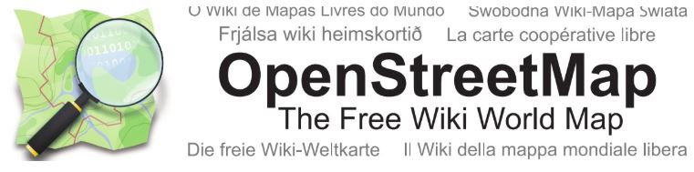

QGIS Desktop GIS
Tutorial series covering projections, attribute management, vector/raster styling, and map creation.
Specializing in the application of spatial technologies to solve
complex urban and environmental challenges.
A selection of projects highlighting my experience in desktop GIS, spatial database orchestration, and Python-based automation.

Tutorial series covering projections, attribute management, vector/raster styling, and map creation.
Setting up PostGIS environments and using SQL queries to analyze NYC spatial datasets.

Utilizing pandas, GeoPandas, and Rasterio within GitHub Codespaces for consistent spatial analysis.

Adapting OpenStreetMap workflows to perform custom queries and visualizations in a PostGIS environment.

I am a Master’s candidate in Geographic Information Systems Technology at the University of Arizona. I specialize in the application of spatial technologies to solve complex urban and environmental challenges. My experience involves managing the entire spatial data lifecycle—from acquiring and processing remote sensing imagery to designing interactive Web GIS applications for stakeholder engagement. I am passionate about the art and science of cartography, ensuring that every analysis is supported by precise, professional, and intuitive visual design.
If you're interested in spatial data science, urban informatics, or collaboration, please reach out using the form below.